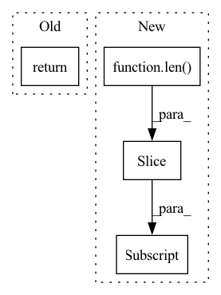

Pattern ID :34370

Before Change
// adjust to crop (by substracting crop"s left,top)
current_boxes[:, 2:] -= rect[:2]
return current_image, current_boxes, current_labels
class Expand:
After Change
// adjust to crop (by substracting crop"s left,top)
current_boxes[:, 2:] -= rect[:2]
target = target[:len(current_boxes)]
for i, x in enumerate(target):
x["bbox"] = current_boxes[i]
x["label_idx"] = current_labels[i]
return current_image, target
In pattern: SUPERPATTERN
Frequency: 3
Non-data size: 4
Instances
Fragment ID: 98624950
Project Name: openvinotoolkit/nncf
Commit Name: 73bbda7deea7af6a46d9c84ebb3f4144b4c7826b
Time: 2022-03-23
Author: nikita.meshalkin@intel.com
File Name: examples/torch/object_detection/utils/augmentations.py
M Class Name: RandomSampleCrop
N Class Name: RandomSampleCrop
M Method Name: __call__(3)
N Method Name: __call__(4)
M Parent Class:
N Parent Class:
M File Name: examples/torch/object_detection/utils/augmentations.py
N File Name: examples/torch/object_detection/utils/augmentations.py
M Start Line: 253
M End Line: 327
N Start Line: 258
N End Line: 338
'>
Before Change
keypoints_list.append(keypoints)
keypoints = torch.cat(keypoints_list, dim=0) // (B, M, 3)
return keypoints
def forward(self, batch_dict):
After Change
keypoints = sampled_points[0][cur_pt_idxs[0]].unsqueeze(dim=0)
keypoints_batch[bs_idx, :len(keypoints[0]), :] = keypoints
// keypoints = torch.cat(keypoints_list, dim=0) // (B, M, 3)
return keypoints_batch
'>
Fragment ID: 98624951
Project Name: derrickxunu/opencood
Commit Name: c7ecf237666697c93ad84b5d271c16e133ac8ccb
Time: 2022-04-01
Author: yunshuang.yuan@ikg.uni-hannover.de
File Name: opencood/models/sub_modules/vsa.py
M Class Name: VoxelSetAbstraction
N Class Name: VoxelSetAbstraction
M Method Name: get_sampled_points(2)
N Method Name: get_sampled_points(2)
M Parent Class: nn.Module
N Parent Class: nn.Module
M File Name: opencood/models/sub_modules/vsa.py
N File Name: opencood/models/sub_modules/vsa.py
M Start Line: 143
M End Line: 161
N Start Line: 124
N End Line: 167
'>
Before Change
"""
if from_lang == to_lang:
return []
return await self._translate(*self.parse_language_codes(from_lang, to_lang, fatal=True), queries)
@abstractmethod
async def _translate(self, from_lang: str, to_lang: str, queries: List[str]) -> List[str]:
After Change
translated_sentences.extend(result)
translated_sentences.extend([""] * (len(queries) - len(result)))
elif len(result) > len(queries):
translated_sentences.extend(result[:len(queries)])
else:
translated_sentences.extend(result)
if mtpe:
'>
Fragment ID: 98624953
Project Name: zyddnys/manga-image-translator
Commit Name: 18236b88f8db3602fcc9235f100fceeee51acd9a
Time: 2023-01-04
Author: thatdudo@proton.me
File Name: translators/common.py
M Class Name: CommonTranslator
N Class Name: CommonTranslator
M Method Name: translate(5)
N Method Name: translate(4)
M Parent Class: ABC
N Parent Class: ABC
M File Name: translators/common.py
N File Name: translators/common.py
M Start Line: 44
M End Line: 45
N Start Line: 54
N End Line: 73